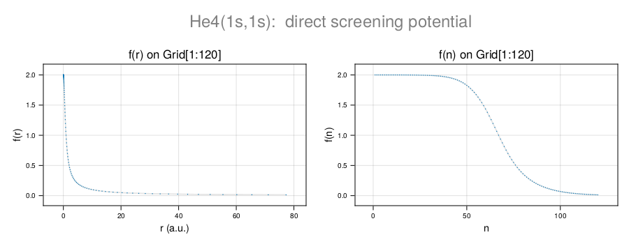
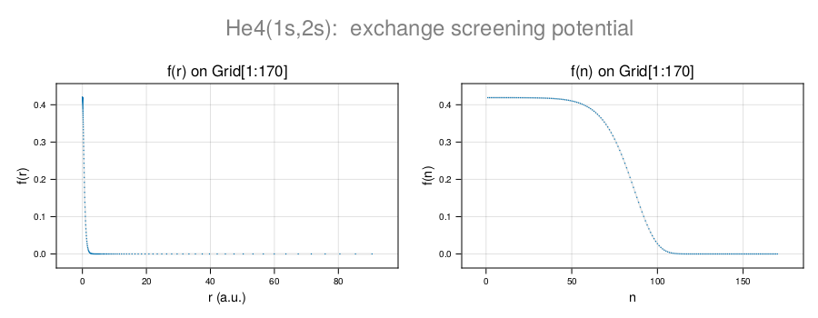

Coulomb integrals
Angular integrals
CamiXon.a_direct — Methoda_direct(k::Int, l::Int, ml::Int, l′::Int, ml′::Int)Coulomb angular integral - direct part:
\[a^{k}(lm_{l};l^{\prime}m_{l^{\prime}})=(-)^{m_{l}+m_{l^{\prime}}} (2l+1)(2l^{\prime}+1)\left(\begin{array}{ccc} l & k & l\\ 0 & 0 & 0 \end{array}\right)\left(\begin{array}{ccc} l & k & l\\ -m_{l} & 0 & m_{l} \end{array}\right)\left(\begin{array}{ccc} l^{\prime} & k & l^{\prime}\\ 0 & 0 & 0 \end{array}\right)\left(\begin{array}{ccc} l^{\prime} & k & l^{\prime}\\ -m_{l^{\prime}} & 0 & m_{l^{\prime}} \end{array}\right)\]
Example:
a_direct(2,1,1,2,2)
2//35
a_direct(6,3,2,3,-1)
-250//20449CamiXon.b_exchange — Methodb_exchange(k::Int, l::Int, ml::Int, l′::Int, ml′::Int)Coulomb angular integral - exchange part:
\[b^{k}(lm_{l};l^{\prime}m_{l^{\prime}})=(2l+1)(2l^{\prime}+1) \left(\begin{array}{ccc} l & k & l^{\prime}\\ 0 & 0 & 0 \end{array}\right)^{2}\left(\begin{array}{ccc} l & k & l^{\prime}\\ -m_{l} & (m_{l}-m_{l^{\prime}}) & m_{l^{\prime}} \end{array}\right)^{2}\]
Example:
b_exchange(1,1,1,2,2)
2//5
b_exchange(6,3,2,3,-1)
1050//20449Radial integrals
Coulomb repulsion - direct integral
CamiXon.Fk — MethodFk(k::Int, P1::Vector{T}, P2::Vector{T}, grid::CamiDiff.Grid) where T<:Real$k^{th}$-order-multipole contribution to the direct radial integral over the (reduced) radial wavefunctions P1 and P2 of two electrons (in the orbitals $nl$ and $n^{\prime}l^{\prime}$) in a central potential field.
\[F^{k}(nl;n^{\prime}l^{\prime}) =\int_{0}^{\infty}U_{F}^{k}(nl;\rho)\left[\tilde{R}_{n^{\prime}l^{\prime}}(\rho)\right]^{2}\rho^{2}d\rho =\int_{0}^{\infty}U_{F}^{k}(n^{\prime}l^{\prime};\rho)\left[\tilde{R}_{nl}(\rho)\right]^{2}\rho^{2}d\rho.\]
Fk(k::Int, P::Vector{T}, grid::CamiDiff.Grid) where T<:Real$k^{th}$-order contribution to the direct radial integral over the (reduced) radial wavefunction P of two equivalent $nl$ electrons in a central potential.
\[F^{k}(nl) =\int_{0}^{\infty}U_{F}^{k}(nl;\rho)\left[\tilde{R}_{nl}(\rho)\right]^{2}\rho^{2}d\rho.\]
Coulomb repulsion - exchange integral
CamiXon.Gk — MethodGk(k::Int, P1::Vector{T}, P2::Vector{T}, grid::CamiDiff.Grid) where T<:Real$k^{th}$-order-multipole contribution to the exchange radial integral over the (reduced) radial wavefunctions P1 and 'P2' of two electrons in a central potential.
\[F^{k}(nl;n^{\prime}l^{\prime}) =\int_{0}^{\infty}U_{F}^{k}(nl;\rho)\left[\tilde{R}_{n^{\prime}l^{\prime}}(\rho)\right]^{2}\rho^{2}d\rho.\]
Direct screening potentials
CamiXon.UFk — MethodUFk(k::Int, P::Vector{T}, grid::CamiDiff.Grid{T}) where T<:Real$k^{th}$-order-multipole contribution to the direct screening potential by an electron in the (reduced) radial wavefunction P of an atom.
\[U_{F}^{k}(\rho) =\frac{1}{\rho^{k+1}}\int_{0}^{\rho}\varrho^{k} \left[\tilde{R}_{nl}(\varrho)\right]^{2} \varrho^{2}d\varrho+\rho^{k}\int_{\rho}^{\infty} \frac{1}{\varrho^{k+1}} \left[\tilde{R}_{nl}(\varrho)\right]^{2}\varrho^{2}d\varrho.\]
Example:
codata = castCodata(2022)
atom = castAtom(Z=2, A=4, Q=0; msg=false);
orbit = castOrbit(n=1, ℓ=0; msg=false);
grid = autoGrid(atom, orbit, Float64; msg=true);
def = castDef(grid, atom, orbit, codata);
E = 0;
scr = zeros(grid.T,grid.N);
def, adams, init, Z = adams_moulton_nodes(E, scr, grid, def; imax=100, msg=false);
def, adams, init, Z = adams_moulton_iterate!(Z, init, grid, def, adams; imax=25, ϵ=1e-10, msg=false);
P1 = real(Z);
UF0P1 = UF(0, P1, grid);
plot_function(scrUF0P1, 1:grid.N, grid; title="He4(1s,1s): direct screening potential")The plot is made using CairomMakie. NB.: plot_function is not included in the CamiXon package. 
CamiXon.UF — MethodUF(orbit1::Orbit, orbit2::Orbit, P2::Vector{T}, grid::CamiDiff.Grid{T}) where T<:RealPotential of direct screening for the spectator electron in orbit 1 by the screening electron in orbit2 with (reduced) radial wavefunction P2.
\[U_{F}(u_{\kappa},u_{\kappa^{\prime}};\rho) ={\textstyle \sum\limits_{k=0}^{\infty}}a^{k}(lm_{l};l^{\prime}m_{l^{\prime}})U_{F}^{k}(nl;\rho).\]
Example:
Exchange screening potentials
CamiXon.UGk — MethodUGk(k::Int, P1::Vector{T}, P2::Vector{T}, grid::CamiDiff.Grid{T}) where T<:Real$k^{th}$-order-multipole contribution to the exchange screening potential of the (reduced) electronic wavefunctions P1 and P2 of the same atom.
\[U_{G}^{k}(\rho) =\frac{1}{\rho^{k+1}}\int_{0}^{\rho}\varrho^{k}\tilde{R}_{nl}(\varrho) \tilde{R}_{n^{\prime}l^{\prime}}(\varrho)\, \varrho^{2}d\varrho+\rho^{k}\int_{\rho}^{\infty} \frac{1}{\varrho^{k+1}}\tilde{R}_{nl}(\varrho) \tilde{R}_{n^{\prime}l^{\prime}}(\varrho)\,\varrho^{2}d\varrho.\]
Example:
atom = castAtom(Z=2, A=4, Q=0; msg=true)
orbit1 = castOrbit(n=1, ℓ=0; msg=true)
orbit2 = castOrbit(n=2, ℓ=0; msg=true)
scr = nothing
grid = autoGrid(atom, [orbit1,orbit2], Float64; Nboost=1, msg=true)
def1 = castDef(grid, atom, orbit1, codata; scr)
E = initE(def1)
adams = castAdams(E, grid, def1)
E, def, adams, Z1 = adams_moulton_master(E, grid, def1, adams; Δν=Value(1,"kHz"), imax=50, msg=false);
def2 = castDef(grid, atom, orbit2, codata; scr)
E = initE(def2)
adams = castAdams(E, grid, def2)
E, def, adams, Z2 = adams_moulton_master(E, grid, def2, adams; Δν=Value(1,"kHz"), imax=50, msg=false);
P1 = real(Z1);
P2 = real(Z2);
UG0 = UG(0, P1, P2, grid);
plot_function(UG0, 1:grid.N, grid; title="He4(1s,2s): exchange screening potential")The plot is made using CairomMakie. NB.: plot_function is not included in the CamiXon package. 
CamiXon.UG — MethodUG(orbit1::Orbit, orbit2::Orbit, P1::Vector{T}, P2::Vector{T}, grid::CamiDiff.Grid{T}) where T<:RealPotential of exchange screening of two electrons with (reduced) wavefunctions P1 and P2, corresponding to the electronic orbitals orbit1 and orbit2.
NB. UF(orbit1, orbit2, P1, P2, grid) = UF(orbit2, orbit1, P1, P2, grid)
\[U_{G}(u_{\kappa},u_{\kappa^{\prime}};\rho) ={\textstyle \sum\limits_{k=0}^{\infty}}b^{k}(lm_{l};l^{\prime}m_{l^{\prime}})U_{G}^{k}(nl,n^{\prime}l^{\prime};\rho).\]
Example:
Direct and exchange energies
CamiXon.𝒥 — Method𝒥(orbit1::Orbit, orbit2::Orbit, P1::Vector{T}, P2::Vector{T}, grid::CamiDiff.Grid{T}) where T<:RealThe direct integral of the electrostatic repulsion energy between two electrons in the (reduced) eigenstates P1 and P2 of an atom, which correspond to the orbitals orbit1 and orbit2.
\[\mathcal{J}(u_{\kappa},u_{\kappa^{\prime}})=(u_{\kappa},u_{\kappa^{\prime}}|\frac{1}{\rho_{12}}|u_{\kappa},u_{\kappa^{\prime}}) =\int_{0}^{\infty}U_{F}(u_{\kappa},u_{\kappa^{\prime}};\rho)\left[\tilde{R}_{n^{\prime}l^{\prime}}(\rho)\right]^{2}\!\rho^{2}d\rho.\]
CamiXon.𝒦 — Method𝒦(orbit1::Orbit, orbit2::Orbit, P1::Vector{T}, P2::Vector{T}, grid::CamiDiff.Grid{T}) where T<:RealThe exchange integral
\[\mathcal{K}(u_{\kappa},u_{\kappa^{\prime}})=(u_{\kappa},u_{\kappa^{\prime}}|\frac{1}{\rho_{12}}|u_{\kappa^{\prime}},u_{\kappa}) =\int_{0}^{\infty}U_{G}(u_{\kappa},u_{\kappa^{\prime}};\rho)\tilde{R}_{nl}(\rho)\tilde{R}_{n^{\prime}l^{\prime}}(\rho)\rho^{2}d\rho.\]